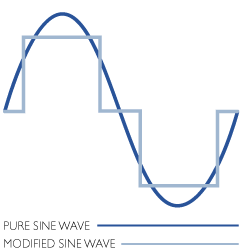

Что такое инвертор для автономных систем электроснабжения

Инверторы служат для преобразования постоянного тока от аккумуляторов в переменный ток напряжением 220 В.
Если в инвертор встроено зарядное устройство для подзаряда аккумуляторов при питании от сети, а также блок слежения за наличием и качеством напряжением в сети, то такое устройство называется блоком бесперебойного питания (ББП). При пропадании напряжения в сети, или выходе его значения за установленные пределы, ББП автоматически переключается на питание от аккумуляторов.
Инверторы также различаются в зависимости от формы генерируемого напряжения переменного тока. Если форма напряжения прямоугольная (меандр), ступенчатая, или трапециевидная, то такие инверторы инверторы являются несинусоидальными. Иногда встречается нагрузка, критичная к форме напряжения - например, асинхронные двигатели или трансформаторы. Такую нагрузку нежелательно питать от несинусоидального инвертора.
Если форма напряжения максимально приближена к синусоиде, такие инверторы считаются синусоидальными. От таких инверторов можно питать любую нагрузку переменного тока.Более подробно о форме выходного напряжения и ее влиянии на работу подключенной нагрзуки см. ниже
Для использования в автономный и резервных системах электроснабжения мы предлагаем различные инверторы, как российские, так и импортные.
Наиболее высокое качество имеет продукция фирм SMA, Steca, Xantrex и Outback, TBS Electronics. У этих инверторов чистая синусоида на выходе и гибкие настройки режимов работы.
Российские инверторы представлены продукцией новосибирского предприятия "СибКонтакт". Несмотря на незатейливый вид и отсутствие дизайнерских изысков, инверторы "Чистый Синус" показывают очень хорошие параметры. Полная автоматика, электронная защита от перегрузки и перегрева, чистый синус на выходе, малое собственное потребление, отсутствие вентиляции охлаждения, возможность герметичного и водозащищенного исполнения позволяет с успехом использовать эти инверторы в резервных и автономных системах электроснабжения. Цена у российских инверторов намного ниже, чем у импортного высококачественного оборудования, однако модельный ряд и область применения этих инверторов ограничены. Эти инверторы в основном применяются для бюджетных систем с мощностью потребления до 1 кВт, где не требуется 100% надежность электроснабжения. В ближайшее время должна появиться новая модельная серия этих инверторов с улучшенными технико-эксплуатационными параметрами, которые позволят его применять в резервных системах для обеспечения электроснабжения отопительного оборудования.
Из недорогих несинусоидальных инверторов неплохое качество у тайваньских инверторов, предлагаемых под торговой маркой "Мобилен", а также у китайских инверторов Simin. В модельном ряду инверторов Simin есть как несинусоидальные, так и синусоидальные инверторы. В моделях Мобилен и Simin как опция бывает маломощное зарядное устройство.
Перейдите по ссылкам оглавления в верхней части страницы для более подробной информации об этих продуктах.
Различия в форме выходного напряжения и ее влияние на работу нагрузки
Синусоидальная и квазисинусоидальная формы напряжения.
Дешевые инверторы обычно имеют на выходе так называемую квазисинусоиду (рис.1). Синусоидальная форма напряжения получается благодаря использованию принципа широтно-импульсной модуляции, который широко применяется системах телекоммуникации и высокоточном электронном оборудовании. Что же дают синусоидальные инверторы в процессе их эксплуатации и стоит ли переплачивать в два раза (а то и больше), по сравнению с меандровыми инверторами? Для этого нужно разобраться, какие приборы мы планируем подключать в этим инверторам. Если это, допустим, будут осветительные приборы или бытовые нагревательные приборы, то вполне вероятно, что покупка инвертора с чистым синусом формы напряжения будет не обязательна.
Но если же вы планируете получать переменное напряжение от инвертора к электроустройствам, которые чувствительны к форме напряжения (это может быть дорогая аудио- или видеоаппаратура, стиральные машины, холодильники и т.п.), то очень желательно иметь инвертор синусоидального типа. Дело в том, что при резкой смене полярности часто случаются довольно неприятные эффекты в подключенных электроприборах, которые сокращают срок их службы и могут привести в преждевременному выходу из строя. Поэтому, в данном случае экономия на инверторах будет неоправдана, так как впоследствии придется или покупать новую электротехнику или нести ее в ремонт раньше срока.
Более того, синусоидальным током лучше питать нагрузку, которая использует при своей работе различные электромагнитные процессы - т.е. синхронные и асинхронные двигатели, низкочастотные трансформаторы. К такой нагрузке относятся холодильники, различные насосы, стиральные машины и т.п. Если питать такую нагрузку от квазисинусоидальным током, то нужно инвертор брать с почти 3-х кратным запасом по мощности. А нагрузку (двигатели, компрессоры, насосы и т.п.) тоже обязательно нужно выбирать с запасом по мощности процентов на 30. При питании от несинуса двигатели теряют мощность процентов на 20-30 и вся эта потеря преобразуется в тепло (т.е. они греются гораздо сильнее). Также наблюдается повышенное "гудение" двигателей.
Для некоторых бытовых электроприборов допустимо использовать переменное напряжение с упрощённой формой сигнала (при подключении меандровых инверторов). Однако, в связи с тем, что при резкой смене полярности случаются довольно неприятные эффекты в подключенных электротехнических устройствах, в дорогих и чувствительных к форме напряжения электроприборах рекомендуется использовать синусоидальные инверторы.
Дополнительную информацию о влиянии формы напряжения инвертора на работу нагрузки и о различных формах напряжения инверторов вы можете почитать в разделе Библиотека нашего сайта. Обратите внимание на статьи Источники бесперебойного питания 220В и Как выбрать блок бесперебойного или резервного питания